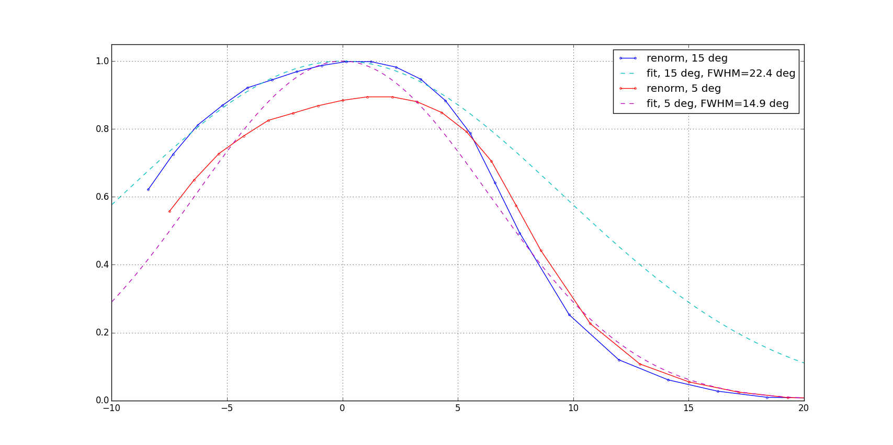
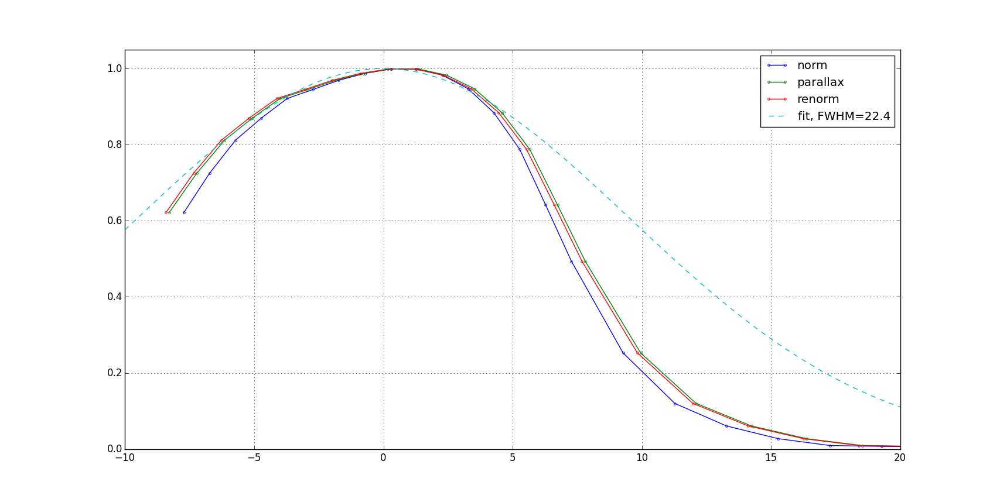
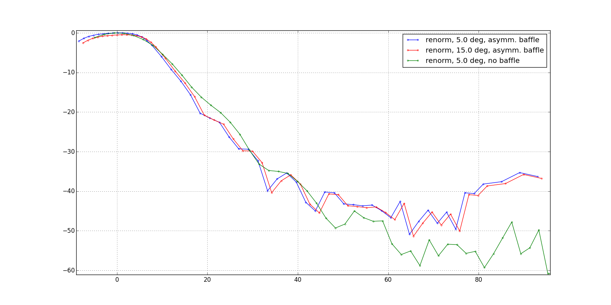
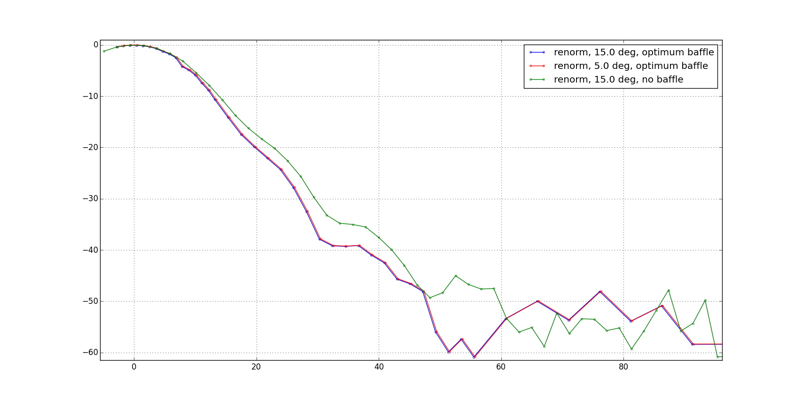

Previous beam studies focused on sidelobes and largely ignored deviations from gaussianity. Here we plot the beam on a linear scale to accentuate the features that determine the majority of the signal. We find that both baffled and unbaffled beams are better fit to gaussians within 5 degrees of center, so we can improve the normalization by fitting only data in that range. We also see a nontrivial effect from renormalizing the data after the parallax correction has been applied.
The most notable result is the effect of the fit range on the fourth baffle dataset, which exhibits asymmetry inside of 10 deg. This was probably the least gaussian beam we measured, so our attempts to fit data out to 15 deg resulted in excessive off-centeredness and slightly lower power.
Transformations shown on the "baffle #4" (scaled down 28 deg, best performance, with drift outlier) dataset.
Effect of fitting within 5 deg instead of 15 deg:
|  |
Renormalization after applying the parallax transformation has a <1 deg effect. Both fits used points within 5 deg.
|  |
Effect of transformations on "baffle #4" dataset shown on log scale, and compared to unbaffled case. This dataset showed the most significant change, definitely outside of previously stated uncertainty.
|  |
|  |
{kind=link}
{kind=link}
{kind=link}
{kind=link}